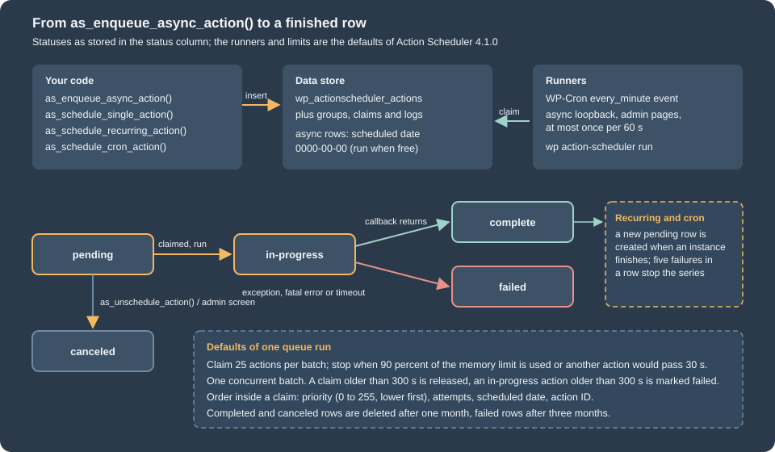
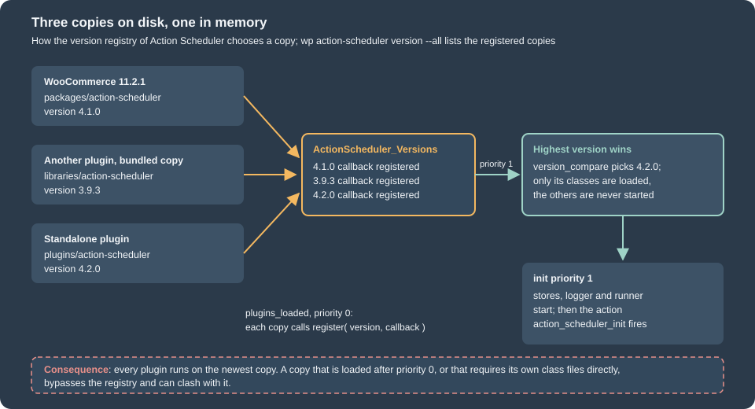

Action Scheduler
|
This content was generated with the assistance of AI and should be verified against the official documentation before being relied on in production. |
Anything slow that a shop does after a customer clicks a button (sending an e-mail, calling a supplier, rebuilding a lookup
table, delivering a webhook) should not run inside the customer’s request. WooCommerce hands such work to
Action Scheduler, a job queue library that stores every job as a row in the database, runs the jobs in small batches and
keeps a log of what happened to each one. Extensions use the same library through a handful of functions whose names start
with as_.
This page was written against WordPress 7.1.3 and WooCommerce 11.2.1 and checked on 2026-10-27. WooCommerce 11.2.1 bundles Action Scheduler 4.1.0; the newest upstream release is 4.2.0 (2026-09-16), which WooCommerce does not bundle yet. Action Scheduler is active on every site that runs WooCommerce, and merchants see it only in WooCommerce > Status > Scheduled Actions. The page explains the model, the API, the runners and their limits, how to run the queue from WP-CLI or a system cron, failure and retry behaviour, and the conflicts that appear when several plugins bundle their own copy. The Pocket Coffee example is a small plugin that logs every new order from a queue, schedules a review request seven days later, checks stock every hour and reports the roast of the day at 06:00. It was installed in the local test shop and every command and output below was produced by it.
For the way WooCommerce is put together (hooks, data stores, the src/ and includes/ layout) see
Architecture; the plugin skeleton used by the example is explained in
Extension Development. The generic ideas behind queues and cron
expressions are in Cron expressions on this site.
Why not WP-Cron alone
WordPress ships its own scheduler, WP-Cron: wp_schedule_single_event(), wp_schedule_event() and the hooks they fire. It is
fine for a small periodic task, but it has properties that matter on a busy shop:
-
WP-Cron has no worker. A visitor’s page request checks whether an event is due and, if so, triggers a separate request to
wp-cron.php. A site without traffic runs no events, and a site with a lot of traffic can start several runs at once. -
Events live in one serialized option (
cron). Thousands of events make every request that reads the option slower, and there is no per-event status, history or error message. -
An event that throws or times out is lost without a trace; WP-Cron does not know it failed.
-
There are no groups, no priorities and no way to ask "is this exact job already queued" except by scanning the option.
Action Scheduler keeps the WP-Cron API shape (as_schedule_single_action() mirrors wp_schedule_single_event()) but stores each
job in its own tables, claims jobs before running them so that two runners never run the same job, records a log line for
every state change and exposes the queue in an admin screen and in WP-CLI. It still uses WP-Cron as one way to start a queue
run, which is the subject of a later section. WP-Cron itself, with a system cron and Action Scheduler outside
WooCommerce, is covered in WP-Cron and Scheduled Tasks.
Source: WordPress Plugin Handbook: Cron
Where it lives and which version you get
Action Scheduler is developed in the open (https://github.com/woocommerce/action-scheduler) and can be used in three ways:
bundled inside a plugin as a library, installed as an ordinary plugin from WordPress.org (slug action-scheduler), or
required through Composer as the package woocommerce/action-scheduler (type wordpress-plugin; the package list on
Packagist showed 59 versions with 4.2.0 as the newest on 2026-10-27). WooCommerce bundles it under
wp-content/plugins/woocommerce/packages/action-scheduler.
The bundled library follows its own release line, which is why the version differs from WooCommerce’s:
| WooCommerce release | Bundled Action Scheduler | Notes |
|---|---|---|
10.1.0 (2025-08-12) |
3.9.3 |
WooCommerce cron jobs moved to Action Scheduler. 3.9.3 added the |
11.0.0 (2026-08-04) |
4.0.0 |
Breaking change: the arguments of an action now count when a unique action is scheduled. Failed actions are purged after three months by default. Cleanup runs as a daily action at 3 am site time. |
11.2.0 (2026-10-07), 11.2.1, 11.3.0-beta.1 |
4.1.0 |
Safer lock implementation for the async runner, |
Upstream only |
4.2.0 (2026-09-16) |
Not bundled in 11.2.1. Skips the runtime scheduling when initialized from |
The header of the bundled 4.1.0 copy declares Requires at least: 6.8, Tested up to: 7.0 and Requires PHP: 7.2. Its documentation
describes an "L-2" policy for the library (the latest minus two WordPress versions), which is wider than the L-1 policy of
WooCommerce itself; see Versions, Requirements and Release Cadence.
WooCommerce itself uses the queue heavily. On the test site, which has only sample data, the actions table held these
groups and hooks after a few hours: woocommerce_run_product_attribute_lookup_update_callback (group woocommerce-db-updates,
176 pending), wc-admin_import_orders (group wc-admin-data, the analytics import), woocommerce_deliver_webhook_async (group
woocommerce-webhooks, webhook delivery), wc_schedule_pending_batch_processes (group wc_batch_processes),
woocommerce_delete_legacy_report_transients, and the library’s own action_scheduler/migration_hook and
action_scheduler_run_recurring_actions_schedule_hook. An extension that slows or blocks the queue therefore slows
down WooCommerce itself, not only its own jobs.
Source: Action Scheduler: FAQ
Storage, statuses and logs
Since Action Scheduler 3.0 the data is in four custom tables, created with the site’s table prefix (wp_ below):
| Table | Content |
|---|---|
|
One row per action: |
|
The group slugs ( |
|
One row per batch that a runner has claimed, with the claim date. |
|
The log of each action: created, started, completed or failed, with the context ( |
The arguments are stored as JSON. When the JSON is up to 191 characters it is kept in the args column (an index
column); a longer array is stored in extended_args (varchar(8000)) and args holds a hash of it. Only values that survive
wp_json_encode() come back identical, so pass scalars and small arrays, and pass the ID of an order rather than the order.
An action is always in one of five statuses, constants of ActionScheduler_Store:
| Status | Constant | Meaning |
|---|---|---|
|
|
Waiting for its scheduled time, or an async action waiting for a free runner (its scheduled date is stored as |
|
|
Claimed and being executed. |
|
|
The callback returned. |
|
|
The callback threw, or the request ended abnormally while it ran, or it stayed in progress longer than the failure period. |
|
|
Cancelled by |
The store behind the tables is swappable (action_scheduler_store_class), as are the logger (action_scheduler_logger_class),
the lock (action_scheduler_lock_class) and the runner (action_scheduler_queue_runner_class). On the test site
wp action-scheduler data-store printed ActionScheduler_HybridStore: the store that serves a site while old post-based
actions are still being migrated. The migration action (action_scheduler/migration_hook) had been pending since the site was
created because nothing had processed the queue yet, which is a first example of the WP-Cron dependency discussed below.

The API
All functions live in the global namespace and are loaded by the winning copy of the library. Every scheduling function returns the
numeric action ID, or 0 when the action could not be stored or, with $unique set, when an identical action is already
pending or running.
| Function | Purpose | Returns |
|---|---|---|
|
Run once, as soon as a runner is free. No time is stored; the row’s scheduled date is |
Action ID or 0 |
|
Run once at a Unix timestamp. |
Action ID or 0 |
|
Run at |
Action ID or 0 |
|
Run on a cron expression such as |
Action ID or 0 |
|
Cancel the next pending action that matches hook, arguments and group exactly. For a recurring or cron action this ends the whole series, because the next instance is only created after the current one runs. |
Action ID or null |
|
Cancel every pending match. See the next section for how empty arguments behave. |
Nothing |
|
Timestamp of the next pending action, |
int, true or false |
|
Cheaper existence check (since 3.3.0): true when a matching action is pending or in progress. |
bool |
|
Query actions by |
Array keyed by action ID |
|
Build the |
Date object |
|
Feature detection (since 3.9.3). |
bool |
Four parameters have the same meaning in all scheduling functions:
-
$hookis the name of a WordPress action. When the action runs, Action Scheduler callsdo_action( $hook, ...$args ), so a job is an ordinary callback registered withadd_action(). The callback receives each element of$argsas a separate parameter, which meansadd_action( $hook, $callback, 10, 2 )is required for two arguments.$hookis avarchar(191). -
$argsis a list. Named keys are stored but arrive positionally, so do not rely on them. Cancel and lookup functions match the list exactly:array( 11 )andarray()are different actions. -
$groupis a free slug. It labels the rows in the admin screen, and is the way to cancel or run all jobs of one plugin without knowing their hooks. Use one group per plugin, named after the plugin. -
$uniquemakes the insert conditional: no row is added when apendingorin-progressaction with the same hook, group and arguments exists. Before 4.0.0 the arguments were not part of this comparison, so two orders could not be queued with the same hook and group at once; the example plugin relies on the 4.x behaviour. -
$priority(0 to 255, default 10, lower first) orders the actions inside a claimed batch.
When it is safe to call the API. The functions exist as soon as a copy of the library is loaded, but its stores are only
initialized on init at priority 1. Called earlier, a function logs a "doing it wrong" notice and returns 0. Hook the work to
init priority 2 or later, or to the action action_scheduler_init, which fires once the stores are ready:
add_action(
'action_scheduler_init',
static function () {
if ( ! as_has_scheduled_action( 'pocket_coffee_stock_check' ) ) {
as_schedule_recurring_action( time(), HOUR_IN_SECONDS, 'pocket_coffee_stock_check' );
}
}
);Source: Action Scheduler: API reference
A complete example: the Pocket Coffee scheduler plugin
The plugin below is the whole example. It needs WooCommerce (Requires Plugins: woocommerce, see
Extension Development), declares compatibility with High-Performance
Order Storage, and uses five of the scheduling patterns: an async action per new order, a delayed single action, a recurring
action, a cron action, and a callback that retries itself. It passes PHP_CodeSniffer with the WooCommerce-Core and
WordPress-Extra standards (no findings) and ran on the test site.
<?php
/**
* Plugin Name: Pocket Coffee Scheduler
* Description: Background jobs for the Pocket Coffee shop built on Action Scheduler.
* Version: 1.0.0
* Requires at least: 7.0
* Requires PHP: 7.4
* Requires Plugins: woocommerce
* WC requires at least: 11.1
* WC tested up to: 11.2
* Text Domain: pocket-coffee-scheduler
* License: GPL-2.0-or-later
*
* @package PocketCoffeeScheduler
*/
defined( 'ABSPATH' ) || exit;
const POCKET_COFFEE_GROUP = 'pocket-coffee';
add_action(
'before_woocommerce_init',
static function () {
if ( class_exists( \Automattic\WooCommerce\Utilities\FeaturesUtil::class ) ) {
\Automattic\WooCommerce\Utilities\FeaturesUtil::declare_compatibility( 'custom_order_tables', __FILE__, true );
}
}
);
/**
* Queues the follow-up jobs of a placed order instead of doing the work inside the checkout request.
*
* @param WC_Order $order The placed order.
*/
function pocket_coffee_queue_order_jobs( WC_Order $order ) {
// Runs as soon as a queue runner is free. unique = true: one pending job per hook, args and group.
as_enqueue_async_action( 'pocket_coffee_log_order', array( $order->get_id() ), POCKET_COFFEE_GROUP, true );
// Runs once, seven days from now.
as_schedule_single_action(
time() + 7 * DAY_IN_SECONDS,
'pocket_coffee_review_request',
array( $order->get_id() ),
POCKET_COFFEE_GROUP,
true
);
}
/**
* Orders created in one step (REST API, admin, checkout without a draft).
*
* @param int $order_id Order ID.
* @param WC_Order|null|bool $order Order object.
*/
function pocket_coffee_on_new_order( $order_id, $order = null ) {
$order = $order instanceof WC_Order ? $order : wc_get_order( $order_id );
// A draft order is not a placed order yet; it is queued when it leaves the checkout-draft status.
if ( $order && 'checkout-draft' !== $order->get_status() ) {
pocket_coffee_queue_order_jobs( $order );
}
}
add_action( 'woocommerce_new_order', 'pocket_coffee_on_new_order', 10, 2 );
add_action(
'woocommerce_order_status_changed',
static function ( $order_id, $from, $to, $order ) {
if ( 'checkout-draft' === $from && $order instanceof WC_Order ) {
pocket_coffee_queue_order_jobs( $order );
}
},
10,
4
);
/**
* Callback of the async action: logs "order placed" with the order number and total.
*
* @param int $order_id Order ID, the single element of the args array.
* @throws RuntimeException When the order is gone; Action Scheduler records the action as failed.
*/
function pocket_coffee_log_order( $order_id ) {
$order = wc_get_order( $order_id );
if ( ! $order ) {
throw new RuntimeException( sprintf( 'Order %d no longer exists', (int) $order_id ) );
}
wc_get_logger()->info(
sprintf( 'Order placed: #%s total %s', $order->get_order_number(), $order->get_total() ),
array( 'source' => 'pocket-coffee-scheduler' )
);
}
add_action( 'pocket_coffee_log_order', 'pocket_coffee_log_order' );
/**
* Callback of the single action: stands in for the review-request email.
*
* @param int $order_id Order ID.
*/
function pocket_coffee_review_request( $order_id ) {
wc_get_logger()->info( sprintf( 'Review request for order %d', $order_id ), array( 'source' => 'pocket-coffee-scheduler' ) );
}
add_action( 'pocket_coffee_review_request', 'pocket_coffee_review_request' );
/**
* Hourly job: reports beans that are running low.
*/
function pocket_coffee_stock_check() {
$low = wc_get_products(
array(
'limit' => 20,
'manage_stock' => true,
'return' => 'ids',
'stock_status' => 'instock',
)
);
wc_get_logger()->info( sprintf( 'Stock check looked at %d products', count( $low ) ), array( 'source' => 'pocket-coffee-scheduler' ) );
}
add_action( 'pocket_coffee_stock_check', 'pocket_coffee_stock_check' );
/**
* Schedules the hourly job when it is missing.
*/
function pocket_coffee_schedule_stock_check() {
if ( ! as_has_scheduled_action( 'pocket_coffee_stock_check', array(), POCKET_COFFEE_GROUP ) ) {
as_schedule_recurring_action( time(), HOUR_IN_SECONDS, 'pocket_coffee_stock_check', array(), POCKET_COFFEE_GROUP );
}
}
// Safe-point to use the API: Action Scheduler fires this once its data stores are ready.
add_action(
'action_scheduler_init',
static function () {
pocket_coffee_schedule_stock_check();
if ( ! as_has_scheduled_action( 'pocket_coffee_roast_report', array(), POCKET_COFFEE_GROUP ) ) {
// Every day at 06:00 site time; the first argument is the timestamp of the first run.
as_schedule_cron_action( strtotime( 'tomorrow 06:00' ), '0 6 * * *', 'pocket_coffee_roast_report', array(), POCKET_COFFEE_GROUP );
}
}
);
// Daily safety net (Action Scheduler 3.9.3 and newer).
add_action( 'action_scheduler_ensure_recurring_actions', 'pocket_coffee_schedule_stock_check' );
add_action(
'pocket_coffee_roast_report',
static function () {
wc_get_logger()->info( 'Roast report ran', array( 'source' => 'pocket-coffee-scheduler' ) );
}
);
/**
* Callback that fails on purpose to show the failed status and the failure hook.
*/
add_action(
'pocket_coffee_always_fails',
static function () {
throw new RuntimeException( 'Supplier API unreachable' );
}
);
add_action(
'action_scheduler_failed_execution',
static function ( $action_id, Exception $exception ) {
wc_get_logger()->error(
sprintf( 'Action %d failed: %s', $action_id, $exception->getMessage() ),
array( 'source' => 'pocket-coffee-scheduler' )
);
},
10,
2
);
/**
* Calls the (pretend) supplier API and retries with a growing delay instead of failing.
*
* Action Scheduler does not retry a failed action by itself, so the callback schedules its own retry.
*
* @param string $sku Product SKU.
* @param int $attempt Attempt number, starting at 1.
* @throws RuntimeException After the third attempt, so the action ends as failed.
*/
function pocket_coffee_sync_supplier( $sku, $attempt ) {
$ok = false; // The real HTTP call goes here; the supplier is always down in this demo.
if ( $ok ) {
return;
}
if ( $attempt >= 3 ) {
throw new RuntimeException( sprintf( 'Supplier sync for %s gave up after %d attempts', esc_html( $sku ), (int) $attempt ) );
}
$delay = 60 * ( 2 ** $attempt ); // 2 minutes, then 4 minutes.
as_schedule_single_action( time() + $delay, 'pocket_coffee_sync_supplier', array( $sku, $attempt + 1 ), POCKET_COFFEE_GROUP, true );
}
add_action( 'pocket_coffee_sync_supplier', 'pocket_coffee_sync_supplier', 10, 2 );The plugin removes its pending actions when it is deleted. Its uninstall.php:
<?php
/**
* Cancels this plugin's scheduled actions when it is deleted from the Plugins screen.
*
* @package PocketCoffeeScheduler
*/
defined( 'WP_UNINSTALL_PLUGIN' ) || exit;
// Action Scheduler ships inside WooCommerce, so its functions exist only while WooCommerce is active.
if ( function_exists( 'as_unschedule_all_actions' ) ) {
// An empty hook with a group cancels every pending action of the group, whatever its arguments.
as_unschedule_all_actions( '', array(), 'pocket-coffee' );
}Source: Action Scheduler: API reference
The points worth noting in the code:
-
The order hooks run inside the checkout request, so they only insert two rows and return.
woocommerce_new_ordercovers orders created in one step (REST API, admin, and the Store API checkout, which fired it once with statuspendingon the test site). A draft order is not a placed order, socheckout-draftis skipped there and queued bywoocommerce_order_status_changedwhen the draft leaves that status. A draft created withwc_create_order( array( 'status' => 'checkout-draft' ) )queued no job while it was a draft and one job once it was set toon-hold;$uniquekeeps the two hooks from queueing the same order twice. -
The order ID is the only argument. The callback loads the order with
wc_get_order(), which works with both order storage backends, and throws when the order has vanished, so the failure is recorded instead of silently ignored. -
The recurring and cron actions are created inside
action_scheduler_init, guarded byas_has_scheduled_action(). Without the guard every request would insert another copy. -
action_scheduler_ensure_recurring_actionsis a safety net. Action Scheduler fires it once a day (a recurring action at about 3 am site time), so the plugin can re-create a recurring action that was lost, for example after repeated failures stopped the series. The hook exists since 3.9.3; a plugin that must also run with older copies checksas_supports( 'ensure_recurring_actions_hook' )and falls back to checking on every admin request. -
The callbacks never read the current user. Queue runners run with no logged-in user (WP-Cron, loopback) or with the user of the shell (WP-CLI), so capability checks belong where the job is created, not where it runs.
What happened when it ran
After activation the two recurring series existed and nothing else. Listing them with WP-CLI (--fields limits the columns):
$ wp action-scheduler action list --group=pocket-coffee --fields=id,hook,status,group,recurring,scheduled_date --format=table
id hook status group recurring scheduled_date
21 pocket_coffee_stock_check pending pocket-coffee yes 2026-10-27 18:35:47 +0000
22 pocket_coffee_roast_report pending pocket-coffee yes 2026-10-28 06:00:00 +0000Creating an order (wp wc shop_order create --status=processing ..., which fires woocommerce_new_order like a checkout does)
added one async row and one row for the review request, seven days ahead. Order 187 in this run:
$ wp action-scheduler action list --group=pocket-coffee --args="[187]" --fields=id,hook,status,args,scheduled_date --format=table
id hook status args scheduled_date
354 pocket_coffee_log_order pending [187] 0000-00-00 00:00:00
355 pocket_coffee_review_request pending [187] 2026-11-03 18:45:38 +0000The shop had no visitors, so no queue run had started on its own (the WP-Cron section below explains why). Running the hook
by hand with WP-CLI processed the action; the line Order placed is what the callback wrote through wc_get_logger() (WooCommerce > Status > Logs, source
pocket-coffee-scheduler):
$ wp action-scheduler run --hooks=pocket_coffee_log_order
Started processing action 354
Completed processing action 354 with hook: pocket_coffee_log_order
1 batch executed.
$ tail -1 wp-content/uploads/wc-logs/pocket-coffee-scheduler-*.log
2026-10-27T18:45:40+00:00 INFO Order placed: #187 total 19.00
$ wp action-scheduler action get 354 --format=json
{"id":"354","hook":"pocket_coffee_log_order","status":"complete","args":[187],"group":"pocket-coffee","recurring":"no","scheduled_date":"0000-00-00 00:00:00","log_entries":[{"date":"2026-10-27 18:45:38 +0000","message":"action created"},{"date":"2026-10-27 18:45:40 +0000","message":"action started via WP CLI"},{"date":"2026-10-27 18:45:40 +0000","message":"action complete via WP CLI"}]}The last line of wp action-scheduler run read Success: 0 scheduled tasks completed. in every run on this
version, although the per-action lines show the actions completing; trust the per-action lines and the status in the
list. Other orders that already existed on the test site produced further lines in the same run, among them
Error processing action 351: Order 186 no longer exists: those orders had been deleted before the queue ran, so their actions
failed as designed and appear as failed rows in the admin screen.
The recurring series renews itself after each run. The stock check was due at 18:35:47 and ran at 18:37:41; the next row was created for 19:37:41, one interval after the run, not after the planned time.
Source: Action Scheduler: WP CLI
Reading, listing and cancelling actions
Three behaviours of the query and cancel functions caused surprises while building the example.
as_get_scheduled_actions() returns five rows unless told otherwise. per_page defaults to 5, status defaults to every
status, and date_compare defaults to <=. With 33 pending review requests in the queue:
$default = as_get_scheduled_actions( array( 'hook' => 'pocket_coffee_review_request' ), 'ids' );
$all = as_get_scheduled_actions(
array(
'hook' => 'pocket_coffee_review_request',
'status' => ActionScheduler_Store::STATUS_PENDING,
'per_page' => -1,
),
'ids'
);
echo count( $default ), ' and ', count( $all );printed 5 and 33. Use per_page => -1 only when the
number is bounded, and page with offset otherwise. The WP-CLI command passes its flags straight through, so
--per_page=200 is needed there too.
Arguments match exactly. as_unschedule_action( 'pocket_coffee_review_request', array(), 'pocket-coffee' ) finds nothing when
every row has array( $order_id ). as_has_scheduled_action() and as_next_scheduled_action() default $args to null, which
means "any arguments", whereas as_unschedule_action() and as_unschedule_all_actions() default it to array(), which means
"exactly no arguments".
as_unschedule_all_actions() has two shortcuts. The code of 4.1.0 branches on which of its parameters are empty:
| Call | What it cancels |
|---|---|
|
Every pending action with that hook, whatever the arguments or group. |
|
Every pending action of the group, whatever the hook or arguments. |
|
Only pending actions of that hook and group whose argument list is empty. This is the form that leaves rows behind. |
|
Only the pending actions that match all three exactly. |
The first version of the example’s uninstall.php called the third form for four hooks. After activating the plugin, creating
orders and running wp plugin uninstall, 34 pocket_coffee_review_request rows were still pending, because each has an order ID
as its argument. Replacing the loop with the second form (as_unschedule_all_actions( '', array(), 'pocket-coffee' ), the
uninstall.php shown above) and repeating the test left 0 pending rows and 38 canceled ones. Cancelling
only changes the status; the rows stay until the cleaner deletes them (see the queue runner section).
How the queue runs
An action runs only when a queue runner claims it. A claim marks a batch of due pending actions with a claim_id so that
a second runner skips them, and the runner then executes them one by one: status becomes in-progress, WordPress runs
do_action( $hook, ...$args ), and the status becomes complete or failed.
There are three ways to start a runner:
| Trigger | Behaviour |
|---|---|
WP-Cron |
Action Scheduler registers an event, |
Async loopback request |
On the |
WP-CLI |
|
The defaults of one run, all taken from the 4.1.0 code and from the performance guide:
| Setting | Default | Filter |
|---|---|---|
Batch size (actions claimed at once) |
25 (WP-CLI: 100) |
|
Time limit of a run |
30 seconds; no new action is started when another one is expected to pass the limit, judged from the average time of the actions already run |
|
Memory |
Stops at 90 percent of the memory limit |
|
Concurrent batches |
1 |
|
Claim and failure timeouts |
300 seconds: a claim older than that is released, an |
|
Retention of finished rows |
1 month for complete and canceled, 3 months for failed (since 4.0.0) |
|
Lock duration |
60 seconds |
|
Order inside a claim |
|
|
The numbers are deliberately conservative so that the library works on shared hosting. A site that processes thousands of actions can raise the batch size, the time limit and the number of concurrent batches, but the performance guide warns that concurrent batches combined with the async loopback can take a site down: the preferred way to go faster is WP-CLI. The same filters take a plain function:
add_filter( 'action_scheduler_queue_runner_batch_size', static fn() => 100 );
add_filter( 'action_scheduler_queue_runner_time_limit', static fn() => 120 );
add_filter( 'action_scheduler_retention_period', static fn() => 2 * WEEK_IN_SECONDS );With WP-CLI a runner can be dedicated to one kind of job (--hooks takes a comma-separated list of hooks, --group one group,
--exclude-groups a list of groups to leave out). The WP-CLI documentation recommends this at scale to avoid database
contention, for example one runner for e-mails and another for payments, with the caveat that actions that depend on each
other’s order must not be split across runners.
WP-Cron, system cron and WP-CLI runners
Past-due actions are normal. A pending action whose date has passed is "past-due". Because WP-Cron needs traffic, a quiet
shop shows past-due actions; the FAQ treats several past-due actions older than a day as a sign of a problem. On the test
site the library’s own migration action stayed past-due for hours with the shop idle, and the 179 pending actions counted by
wp action-scheduler status included the oldest one from 13:47.
Making WP-Cron reliable. The usual production set-up for WooCommerce stores is:
-
Disable the visitor-triggered WP-Cron:
define( 'DISABLE_WP_CRON', true );inwp-config.php. -
Call WP-Cron from the system scheduler every minute, for example
* * * * * cd /var/www/html && wp cron event run --due-nowor a request towp-cron.php, so that every plugin’s WP-Cron events and the Action Scheduler event run on time. -
Optionally run Action Scheduler itself with WP-CLI, in a loop or on a schedule, to give it a shell’s resources instead of a web request’s. The Action Scheduler documentation lists three cases where this is clearly better: long-running jobs, large queues and sites where other plugins use WP-Cron heavily.
The system cron line itself was not installed on the test container; the WP-CLI command it relies on ran, as shown above with
wp action-scheduler run. Without options the command works through batches of 100 actions
(--batch-size) until nothing is due (--batches=0, the default); --force overrides the limit on concurrent batches, and
--hooks, --group and --exclude-groups restrict what the runner claims.
One more observation from the test site: wp action-scheduler run --group=pocket-coffee failed with
Error: There was an error running the action scheduler: The group "pocket-coffee" does not exist. even though the group existed
in wp_actionscheduler_groups, while --hooks=... worked. The site was using the hybrid store (see above), and the error
message comes from the old post-based store, which has no such group. A site whose migration has finished uses the plain
database store and does not show this; the sentence is a reason to let the queue run until the migration action has completed
before relying on --group.
Source: Action Scheduler: WP CLI
Source: WordPress Plugin Handbook: Cron
Replacing the web runners. To use only WP-CLI, stop the web runners. The documentation points to the plugin "Action Scheduler - Disable Default Queue Runner", whose effect can be written as two filters (shown for illustration, not run here):
// Stop the asynchronous loopback requests dispatched from admin pages.
add_filter( 'action_scheduler_allow_async_request_runner', '__return_false' );
// Swap in a runner class without the WP-Cron hook; it must extend ActionScheduler_Abstract_QueueRunner or the default runner.
add_filter(
'action_scheduler_queue_runner_class',
static fn() => 'My_Plugin_Cli_Only_Queue_Runner'
);If you do this, nothing runs the queue unless you run it; keep a monitor on the age of the oldest pending action.
On Kubernetes the queue is usually run by dedicated worker pods and a CronJob rather than by web requests; see Cloud: Action Scheduler Workers on Kubernetes.
Failures, retries and recurring actions
A failure is an exception or a dead process. When the callback throws any Exception, the runner marks the action failed,
writes action failed via <context>: <message> to the log and fires action_scheduler_failed_execution with the action ID, the
exception and the context. A PHP fatal error or a timeout is caught later, by the fatal-error monitor (hook
action_scheduler_unexpected_shutdown) or by the cleaner when the action has been in-progress for more than the failure
period.
The example plugin logs every failure through that hook. An action whose callback always throws (pocket_coffee_always_fails,
Supplier API unreachable) produced:
$ wp action-scheduler run --hooks=pocket_coffee_always_fails
Started processing action 213
Error: Error processing action 213: Supplier API unreachable
$ tail -1 wp-content/uploads/wc-logs/pocket-coffee-scheduler-*.log
2026-10-27T18:40:24+00:00 ERROR Action 213 failed: Supplier API unreachableand the action row reads status: failed with the log entries action created, action started via WP CLI and
action failed via WP CLI: Supplier API unreachable.
A hook without a callback also fails. An action whose hook has no callback when the runner reaches it (the plugin that
registered it is deactivated, or the callback is only added on certain requests) is marked failed with the message
Scheduled action for pocket_coffee_orphan will not be executed as no callbacks are registered. Register callbacks
unconditionally, early (at plugin load, not inside is_admin() or a template hook), because queue runs happen in WP-Cron,
loopback and CLI contexts.
Nothing retries a failed action. Action Scheduler records the attempt (attempts and last_attempt_gmt columns) and moves on.
If the job should be repeated, the callback schedules the next try itself, with a growing delay, and stops after a
fixed number. That is the pocket_coffee_sync_supplier callback of the example (attempt 1 failed to reach the supplier, so it queued
attempt 2 two minutes later, and attempt 3 would wait four minutes):
$ wp action-scheduler action list --hook=pocket_coffee_sync_supplier --fields=id,status,args,scheduled_date --format=table
id status args scheduled_date
322 complete ["PC-ETH-WHL-250",1] 0000-00-00 00:00:00
323 pending ["PC-ETH-WHL-250",2] 2026-10-27 18:45:08 +0000The first row is complete because the callback did not throw; it asked for a retry. Throw only for the final attempt, so that
the last row ends as failed and the admin screen shows it. Because $unique is true and the arguments differ per attempt, the retry rows do not collide.
Recurring series can stop. For recurring and cron actions the next instance is created after the current one finishes. When
the latest runs of the same hook have all failed (5 by default, filter action_scheduler_recurring_action_failure_threshold), Action Scheduler does not schedule another and fires
action_scheduler_failed_to_schedule_next_instance. This is why the example hooks action_scheduler_ensure_recurring_actions:
a hook that has been failing for days and is then fixed would otherwise never run again.
Idempotence. Jobs talk to external systems and can fail half way, and an operator can run an action again from the admin screen or WP-CLI. Write callbacks so that running them again is harmless: check the state of the order before sending the e-mail, use idempotency keys on external calls, and keep each job short.
Source: Action Scheduler: Usage
WP-CLI commands
Action Scheduler registers the wp action-scheduler command group (4.1.0, WP-CLI 2.12.0 on the test site). wp
action-scheduler printed this list:
| Command | Use |
|---|---|
|
|
|
Process the queue. |
|
Delete finished rows: default statuses |
|
Counts per status with the oldest and newest scheduled date. The output on the test site began with the data store, runner and version lines, then one row per status. |
|
Which copy and version are active and which copies registered. |
|
Move old post-based actions into the tables; only available while a migration is in progress. |
|
Re-create the tables when they are missing. |
Source: Action Scheduler: WP CLI
The admin screen
The built-in screen lists all actions with their status, hook, arguments, schedule, group, claim and log. It is at
Tools > Scheduled Actions (tools.php?page=action-scheduler) and, when WooCommerce is active, at
WooCommerce > Status > Scheduled Actions (the tab action-scheduler of the status page). From it an administrator can filter by status, search by hook, arguments,
action ID or claim ID, sort, run a pending action immediately, cancel it, and read the log to find out why an action failed. The
screen needs no code, so it is the first place to look when an order’s follow-up e-mail never arrived. When Action Scheduler is
installed as a plugin rather than bundled, the screen is still there but the plugin adds no interface for scheduling.
Several copies of Action Scheduler: how a version is chosen
WooCommerce bundles Action Scheduler, and so do many other plugins (subscriptions, bookings, memberships, mailers). Every one of them calls the same global functions and writes to the same tables, so exactly one copy of the code must be running. The library solves this with a version registry, and the mechanism explains most of the conflicts seen in the wild.

The main file of each copy (action-scheduler.php) does the following, as read from the bundled 4.1.0 source:
-
It defines the function
action_scheduler_register_4_dot_1_dot_0()unless that name exists (the version is part of the function names, so two copies of the same version define them once and later copies skip the file’s body). -
The first copy to load also loads the class
ActionScheduler_Versionsand attachesActionScheduler_Versions::initialize_latest_version()toplugins_loadedat priority 1. -
Each copy attaches its register function to
plugins_loadedat priority 0. The function adds the version number and the name of an initialization function to the registry; a second registration of the same version number is ignored. -
At priority 1 the registry sorts the versions with
version_compare()and calls the initialization function of the highest one, which loads that copy’s classes and callsActionScheduler::init(). -
The stores, logger and runner start on
initat priority 1, andaction_scheduler_initfires afterwards. -
A copy included by a theme works the same way, except that it only starts itself when no plugin has loaded one yet: if
plugins_loadedhas already finished and theActionSchedulerclass does not exist, the copy initializes immediately.
On the test site two experiments showed the outcome. First, the standalone plugin from WordPress.org at version 3.9.3 was installed next to WooCommerce 11.2.1. The older copy registered but did not win:
$ wp action-scheduler version --all
version callback active
3.9.3 action_scheduler_initialize_3_dot_9_dot_3 no
4.1.0 action_scheduler_initialize_4_dot_1_dot_0 yes
$ wp action-scheduler source
wp-content/plugins/woocommerce/packages/action-scheduler/Then that plugin was replaced by the 4.2.0 release. Now the standalone plugin supplied the code that WooCommerce runs on:
$ wp action-scheduler version --all
version callback active
4.1.0 action_scheduler_initialize_4_dot_1_dot_0 no
4.2.0 action_scheduler_initialize_4_dot_2_dot_0 yes
$ wp action-scheduler source
wp-content/plugins/action-scheduler/ActionScheduler_SystemInformation::active_source() returned {"type":"plugin","name":"Action Scheduler"} and
as_supports( 'uninstall_bootstrap' ) was true, which is a 4.2.0 feature: WooCommerce’s own jobs, and the jobs of
every other plugin, ran on the newer copy for as long as it was active. Both plugins were deactivated and deleted afterwards.
This is also the supported way to try a newer Action Scheduler than the one WooCommerce bundles.
Consequences for extension authors
-
A plugin that bundles a copy always gets at least that version, because the highest registered version wins. It may get a newer one. Code must therefore work with any version from the one bundled upwards, and must never assume that its own copy is the running one.
-
Feature-detect, do not version-sniff:
function_exists( 'as_has_scheduled_action' )(3.3.0) andas_supports( 'ensure_recurring_actions_hook' )(3.9.3). Behaviour also changes between majors: from 4.0.0 the arguments are part of the uniqueness check and failed rows are purged after three months, so a plugin that relies on either should say which version it needs. -
The class
ActionScheduler_Versionsis loaded by whichever copy loaded first, not by the winner. The library says this about its ownget_sources()method (added in 3.9.1): "it’s possible that the class definition used at runtime will belong to an earlier version". Calling newer methods of it can fatal; 3.9.2 moved the version information methods toActionScheduler_SystemInformationand deprecated the old ones for exactly this reason. Do not call internalActionScheduler_*classes from an extension; use theas_*functions. -
Load the library from the top level of the main plugin file, so that the registration reaches
plugins_loadedpriority 0. The usage documentation says a copy loaded after that point must be loaded on a hook earlier thanplugins_loadedor at a negative priority; a copy that misses the window is not registered for the request. -
Never copy individual class files into your plugin, never rename or wrap the
as_*functions, and never define your own function with such a name. A partial or modified copy bypasses the registry and the version-named guards. -
Do not call the API before
initpriority 1 (the call logs a notice and returns 0); wait foraction_scheduler_init. -
For a plugin that cannot work without WooCommerce, do not bundle Action Scheduler at all: declare
Requires Plugins: woocommerceand use the copy that WooCommerce provides. Bundle only when the plugin must run without WooCommerce, and then keep the copy current (a subtree from thetrunkbranch or a tag, orcomposer require woocommerce/action-scheduler).
Diagnosing a conflict. wp action-scheduler version --all lists every registered version and marks the active one,
wp action-scheduler source --all lists the file each copy was registered from, and wp action-scheduler runner and
data-store name the classes in use. Remember that a copy that never registered (loaded too late or modified) is invisible in these lists, so
if a plugin’s jobs are missing and the list looks normal, check where the plugin loads its copy.
The WooCommerce 11.2.0 changelog names one such fatal error: when another plugin loads an Action Scheduler copy older
than 3.3.0, the function as_has_scheduled_action() (added in 3.3.0) is not defined, and the batch processing
controller of WooCommerce failed on calling it. Since 11.2.0 it falls back to as_next_scheduled_action() (#69415). The
copies tested above (3.9.3 and 4.2.0, next to 4.1.0) are all newer than 3.3.0 and coexisted without a fatal error, so
this case was not reproduced here. The lesson for an extension is the same: check function_exists() before calling an
as_* function that is newer than the oldest copy that may win.
Deactivation and uninstall
Deactivating a plugin does not touch its scheduled actions. They stay pending, and when their time comes the runner finds
no callback and marks them failed (see above). Cancel the pending actions of the plugin when it is uninstalled:
-
A plugin that depends on WooCommerce can rely on the WooCommerce copy where WooCommerce is active, and cancels by group, as in the
uninstall.phpof the example above (tested withwp plugin uninstall). If WooCommerce is not active at that moment the functions do not exist, so the file checksfunction_exists()first. -
A plugin that bundles the library has a harder task: WordPress deactivates the plugin before running
uninstall.php, soplugins_loadedhas already passed without the copy and the functions are not defined. The library documentation shows arequire_onceof the bundledaction-scheduler.phpinsideuninstall.php. Versions before 4.2.0 also start their runtime on that load, and the async dispatcher then runs onshutdown, after WordPress has deleted the plugin’s files, which is a fatal error. The documented guard unhooks the dispatcher when the library was loaded by this file and the version does not supportuninstall_bootstrap:
<?php
defined( 'WP_UNINSTALL_PLUGIN' ) || exit;
// Another active plugin may already have loaded Action Scheduler for this request.
$as_already_loaded = class_exists( 'ActionScheduler', false );
require_once plugin_dir_path( __FILE__ ) . 'libraries/action-scheduler/action-scheduler.php';
as_unschedule_all_actions( '', array(), 'my-plugin' );
if ( ! $as_already_loaded && ! ( function_exists( 'as_supports' ) && as_supports( 'uninstall_bootstrap' ) ) ) {
$runner = ActionScheduler::runner();
if ( method_exists( $runner, 'unhook_dispatch_async_request' ) ) {
$runner->unhook_dispatch_async_request();
}
}This variant was not run (the example plugin does not bundle the library). It uses the group form of
as_unschedule_all_actions() instead of the documentation’s per-hook call, for the reason found in the cancel section.
Cancel only your own group: the tables belong to the site, and another plugin may still use them.
Good practice
-
Queue ids, not objects. Arguments are JSON, kept in a 191-character column and spilling into an 8000-character one (see the storage section); keep them small, pass an order ID and load the order in the callback with
wc_get_order(), which also respects HPOS. Personal data in arguments is stored in plain text in the database and kept for the retention period. -
Keep jobs short and bounded. A callback that needs more than a few seconds should process one chunk and enqueue the next one. Remember the 30 second request limit of the web runners.
-
Do not schedule on every request. Guard with
as_has_scheduled_action()and create recurring series fromaction_scheduler_initor on activation, never inside page rendering. -
Choose the right function. Async for "do it soon", single for "do it at this moment", recurring for a fixed interval from the previous run, cron for wall-clock times such as 06:00.
-
Group and name. Prefix hooks with the plugin slug, use one group per plugin, and keep hook names stable: renaming a hook strands the pending rows of the old name.
-
Check capabilities when scheduling. Callbacks run without a user, so a REST route or AJAX handler that schedules a job must authorize the caller first, as for any other action.
-
Watch the queue. The number of pending past-due actions and the count of failed ones are the two health indicators;
wp action-scheduler statusprints them and the admin screen filters on them.
What could not be run
-
A real system cron entry and
DISABLE_WP_CRON: the container has no scheduler configured. The commands inside were run. -
The asynchronous loopback runner (it needs an admin page view in a browser) and WP-Cron triggered by a visitor. They were read from the code, and the idle shop showed the past-due behaviour.
-
The
uninstall.phpof a plugin that bundles the library, shown in the previous section. -
High-volume tuning (concurrent batches, extra runners, custom stores and loggers, multisite): the filters were read from the 4.1.0 source and the documentation, not load-tested.
-
The reported fatal error from an old bundled copy on WooCommerce 11.2.
References
-
WordPress Plugin Handbook: Activation and deactivation hooks
-
Extension Development (plugin header, activation and uninstall)
-
HPOS: High-Performance Order Storage (why jobs load orders with
wc_get_order()) -
Analytics (the order import runs through the queue)